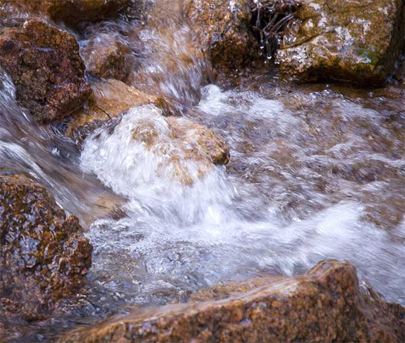
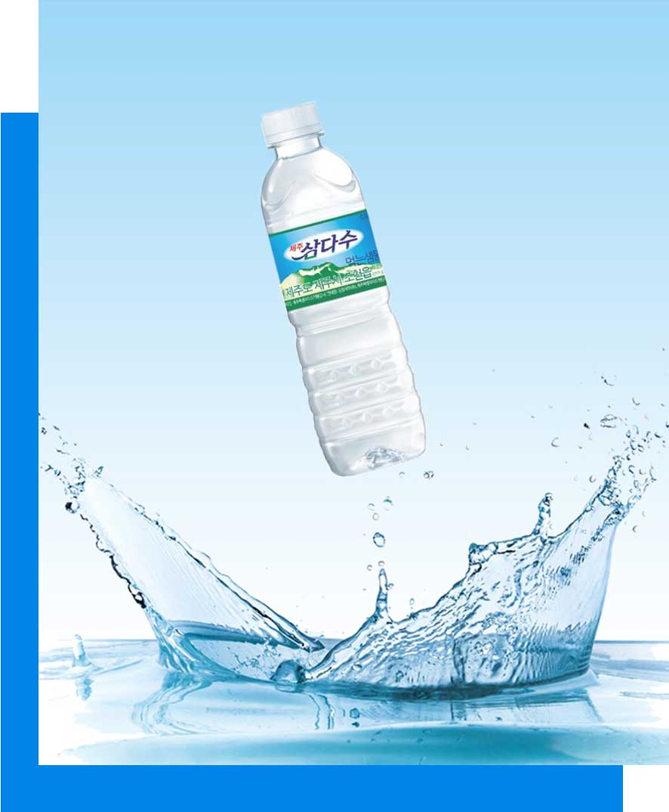

용천수의 정의
대수층을 따라 흐르는 지하수가 암석이나 지층의 틈을 통해
지표면으로 자연스럽게 솟아나는 지점을 용천이라고 하고,
이 물을 용천수라 한다.
대수층을 따라 흐르는 지하수가 암석이나 지층의 틈을 통해 지표면으로 자연스럽게 솟아나는 지점을 용천이라고 하고, 이 물을 용천수라 한다.


용천수의 분류
용출지점의 틈의 크기에 의한 분류 누수 및 침투용천 대수층에
발달된 여러지점으로부터
지하수가 용출되는 용출되는 용천으로서
용출량이 비교적 소량이어서 누수용천이라고 부른다.
균열용천 비교적 큰 암석의 절리나 파쇄대의 틈을 따라
지하수가 유출되는 용천으로서
큰 파쇄대를 통해서 지하수가 유출되는 경우를 파쇄대 용천이라 한다.
공동용천 화산암이나 석회암 분포지역에서
용암터널과 용해공동과 같이 큰 공간을 통해
지하수가 유출되는 경우를 공동용천이라 한다.
용출지점의 틈의 크기에 의한 분류 누수 및 침투용천 대수층에 발달된 여러지점으로부터 지하수가 용출되는 용출되는 용천으로서 용출량이 비교적 소량이어서 누수용천이라고 부른다.
균열용천 비교적 큰 암석의 절리나 파쇄대의 틈을 따라 지하수가 유출되는 용천으로서 큰 파쇄대를 통해서 지하수가 유출되는 경우를 파쇄대 용천이라 한다.
공동용천 화산암이나 석회암 분포지역에서 용암터널과 용해공동과 같이 큰 공간을 통해 지하수가 유출되는 경우를 공동용천이라 한다.
서브이미지
제주 용천수의 특성
분포현황
제주도내 용천수는 총 1,023개소가 분포하며, 제주시 613개소,
서귀포시 410개소임. 대부분 해발 200m 이하의 저지대에 분포하고,
중산간 지역과 고지대에 일부 분포한다.